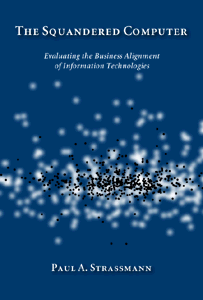
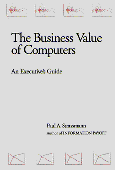
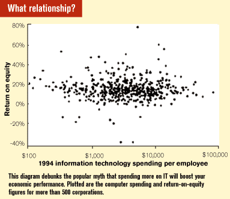
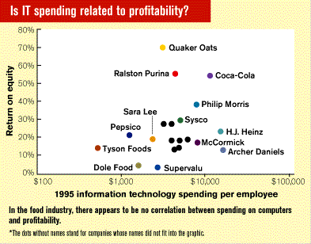
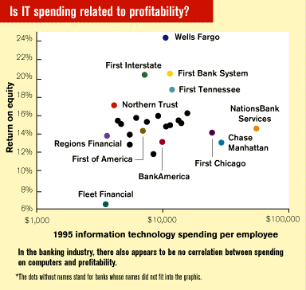

|
|
||
|  From The Squandered Computer by Paul A. Strassmann. Copyright 1997 by Paul A. Strassmann. All rights reserved. Reproduced here by permission of the publisher. For more information, see http://www.strassmann.com. |
Maybe. But maybe not. In Paul Strassmann's new book The Squandered Computer, he offers evidence that the relatioship between spending and profitability is no simple formula.
By Paul A. Strassmann
The incantations that computers deliver competitive gains, speed up business transactions, increase customer satisfaction, deliver superior quality, and lead to improved profitability have become generally accepted wisdom. How could U.S. corporations otherwise keep spending more money on computers than on any other tooling investment? Nevertheless, computer spending and performance are unrelated.
The first widely publicized challenge that computers may not be delivering economic value was William Bowen's 1986 Fortune article "The Puny Payoff from Office Computers." Subsequently Gary Loveman reported that investment in computers offered the least attractive returns as compared with other investment options in his report in "Information Technology and the Corporation of the 1990's" (MIT Press, 1994). After that, the voice of the skeptics became louder. Steven Roach, a Morgan Stanley economist, provided the econometric underpinning for those who were uncertain about the validity of utopian advertisements by computer manufacturers. Roach showed that information worker productivity had not increased in more than 20 years while organizations were installing increased amounts of computer capital equipment.
The reactions from the computer industry, academia, consultants, and the technical press to the growing acceptance of Roach's thesis were ones of puzzlement. Business publications filled the gap by generating a large number of anecdotal cases that claimed, but did not substantiate, economic gains. This may have been good journalism, but certainly not hard evidence. To demonstrate that rising economic benefits were directly attributable to increased computerization would necessitate the adoption of a generally accepted method for relating the contributions of computers to profits. No such method was available. There did not exist even an agreement on how to approach such an assessment.
All of this confusion gave rise to the widely quoted "computer paradox" phrase, originally attributed to the Nobel Prize economist Robert Solow, who said, "We see computers everywhere but not in the productivity statistics."
|  |
My 1990 book The Business Value of Computers (The Information Economics Press) showed that there was no correlation whatsoever between expenditures for information technologies and any known measure of profitability. MIT's Eric Brynjolffson published "The Productivity Paradox of Information Technology" (Communications of the ACM, 1993), which confirmed that there was no such relationship. Tom Landauer's 1995 book The Trouble with Computers (The MIT Press) offered another cogent critique of the questionable economic benefits from computerization.
The Gartner Group has now joined the rank of skeptics. B. Stewart's paper "Enterprise Performance Through IT: Linking Financial Management to Contribution," delivered at the 1996 IT Expo in Lake Buena Vista, Fla., announced that the net average return on information technology investments for the period from 1985 through 1995 was only 1%.
Amount of spending
The following figure is the total 1996 estimated world-wide spending on information technologies: $1.076 trillion.
There are a number of ways of determining the United States' share of global IT spending. According to a report in Fortune magazine ("The Growth of Computing Power," 1993), for the last few years the United States operated about one-half of the world's installed computer capacity. That suggests U.S. expenditures of roughly $500 billion. Another way of estimating follows Roach's paper "The Economics of Competitive Advantage" (Morgan Stanley International Investment Research, 1996), which states that the United States generates 22% of the world's total Gross Domestic Product and that its ratio of information technology costs to GDP is approximately double the rest of the world. That suggests a level of spending of $473 billion. A third estimate uses the Morgan Stanley 2.8% ratio of information technology purchases to the United States' GDP. That number would be approximately $505 billion. Anyway you look at it, these are large sums.
The international dimension
According to the U.S. Bureau of the Census' 1995 Statistical Abstract of the United States, the U.S., with 4.6% of the world's population and 21.3% of its Gross National Product, has installed about 50% of the global computing power.
|
The best computer technologies will always add unnecessary costs to a poorly managed firm.
|
The key technologies of the information age: microprocessors, operating systems, computer languages, and office application software, all derive their leadership from U.S. corporations. No other nation has seen fit to make as heavy investments in computerization, by whatever measure one may choose to make such comparisons.
The United States devotes a higher percentage of the GDP to information technology spending than any other country. Only New Zealand (with 2.6% of GDP), Sweden ( 2.4%) and Switzerland ( 2.4%) come close to spending in the United States. It is also noteworthy that Japan, with its historically high rates of productivity growth, spends only 1.4% of its GDP on IT.
High growth rates in information technology spending for other Asian and Latin American countries reflect catching-up efforts, but in support of relatively low levels of GDP. Though Japan together with Europe exceed the U.S. GDP, it does not appear that they will surpass U.S. spending. The high growth rate in U.S. spending is likely to continue. Therefore, the concentration of global IT spending within the U.S. will remain close to the present 50% share in the immediate future.
Singapore offers a puzzling case of exceptional economic growth while keeping IT spending unusually low. According to the International Institute for Management Development (IMD) and the World Economic Forum, in the last six years Singapore has emerged as the country ranking consistently second in global competitiveness. Despite widely publicized aspirations to become the world's first information island, they allocate only half of a percent of GDP to information technologies. (For more detailed information, see IT 2000, A Vision of an Intelligent Island, National Information Infrastructure Division, Singapore, 1993.) It is conceivable that Singapore's exceptionally low levels of the government's share of the GDP may account for the sparseness of computer-gobbling demands.
The April 11, 1994, issue of Forbes magazine quoted the American Electronics Association's 1993 report on capital purchases, which highlights the relative importance of information technologies. Electronics, defined as computers, peripherals, office equipment, software, and telecommunication equipment, amounted to 73% of a total of $646 billion global investments. The U.S. accounted for 36% of that. What I find interesting is the importance of information technologies as compared with all other electronic equipment. Consumer sector purchases for electronics accounted for only 11% of the total. This suggests that speculations about entertainment products becoming the leaders of the next growth wave of electronic industry may be premature.
One measure of the value of information technologies to the U.S. economy concerns its relative standing as compared with international competition. We need evidence that as compared with other economies, the U.S. has either gained or lost its relative standing because of its extraordinary emphasis on information technology investments. The answer to that question would place the discussion about the productivity paradox not only in its domestic, but also into its international, context. The fact is that the high rate of U.S. expenditures for information technologies did not diminish the U.S. standing as the country ranking first in global competitiveness.
Meanwhile, our principal competitors keep paying higher hourly wages. According to Roach's "The Economics of Competitive Advantage" (Morgan Stanley International Investment Research, 1996), the hourly compensation in manufacturing in the highly computerized U.S. is $17.20 per hour. The less computerized Europe pays $21.25, and the least computerized Japan pays $23.66. What may appear as a computer paradox may in fact be a social paradox.
Gathering of evidence
While I was CIO at Xerox I was able to get reliable data about computer budgets, business indicators, and financial results for more than 50 operating divisions. These units competed with identical products, against identical competitors, at worldwide locations. Yet the financial results delivered by each operating unit varied enormously even though their computer budgets as well as computer applications were comparable. My 1974 analysis showed that there was absolutely no correlation between computer budgets and profits for Xerox operating units. Information systems were important, but certainly not a key to profitability as was claimed by computer vendors, automation consultants, and academics in departments of computer science.
Subsequently I spent seven years gathering data from a collection of other firms to see if they showed diversity similar to Xerox operating units. By 1985 I was able to show a scatter diagram that displayed profit performance for 84 companies, as related to their computer expenses. (For further information, see "Measuring Management Productivity," The Consultant, Digital Equipment Corporation.) It showed no connection between computer spending and financial results, regardless of the measures of profitability or indicators of computer usage.
In The Value of Computers, I assembled data from 292 enterprises while engaged in consulting work. These findings produced a diagram that portrayed a random scatter pattern between computer budgets and returns on investment. Most computer people and quite a few academicians did not know what to make of such randomness. It did not conform to what was expected by those who wished to see a strong positive correlation.
Some objected to these findings because the data originated as a by-product of a consulting practice, and only troubled firms would seek diagnostic help about their computer spending. This protest did not hold up under scrutiny: The sample included a large number of businesses with little computer spending and high profitability as well as many firms with enormous computer spending and dismal financial results.
The infancy plea
Others maintained that it would take decades before convincing evidence about the benefits of computers would appear. There is a widely held belief that all new technologies require an extended gestation period before they can become profitable. The January 22, 1994, issue of the Economist explained the apparent lack of returns on IT investments by pointing out that it took from 1900 until 1920 for electrical motors to show substantive returns. Accordingly, computerization was at this point of time still in its introductory stage and therefore expectations of demonstrated profitability were premature. The lack of correlation between computer spending and profitability at present still reflects transient conditions that would disappear in due course.
More than 40 years have passed. Fortune magazine dates the advent of the computer age to the introduction of the UNIVAC computer in 1952. Soon thereafter, sophisticated business applications became feasible. Forty-five years of the computer age no longer qualifies it for an infancy exemption from economic accountability. The frequently used argument about the as yet latent economic potential of computerization has little merit.
A similar hypothesis, that computer profitability is still in the transition phase to better results, also lacks evidence. The scatter diagram pattern between corporate results and computer spending has retained the same shape for over 20 years. In fact, the pattern of the results is trending away from the positive. As the sample of companies keeps increasing, the correlation is acquiring a slightly negative bias. Greater spending on computers relative to employment levels is now associated with greater losses than before.
Grosch's Law as a profit guide
For a long time the reigning theory about the economics of computerization was Grosch's Law. It asserted that there were huge economies of scale available because of the rapidly declining costs of computers. Accordingly, the profitability of computerization would show up when firms bought large-scale equipment and centralized the workload in data centers for more efficient processing.
Herbert Grosch, a one-time IBM employee and subsequently the head of the U.S. Department of Commerce's National Bureau of Standards, said that computing power increases with the square of its costs. Though Grosch never published his work, his theories became the accepted truth for computer capacity planning for more than 20 years, although it was never clear whether Grosch's Law was a reflection of how IBM priced its computers or whether it related to actual costs. It provided the rationale that a bigger computer is always better. The IBM sales force used Grosch's rationale to persuade organizations to acquire more computing capacity than they needed. Grosch's Law also became the justification for offering time-sharing services from big data centers as a substitute for distributed computing.
As yet, there is no evidence that computer investments are exhibiting the economies of scale that conform to economists' favorite assumption about the increasing returns realized from investments in capital goods. The now thoroughly disproved Grosch's Law should serve as a reminder that the history of the economics of computing has had an abundance of unsupported misperceptions. Ideas of how to invest in new equipment acquire temporary popularity until they are conveniently abandoned for yet another rationalization of how to spend money.
Insufficient opportunities
One explanation of the lagging computer payoffs proposes that information technologies are just too difficult to use. Accordingly, learning and using software costs U.S. firms five million hours a year, or $100 billion, thus reducing the observed productivity gains. J. Krohe Jr.'s article "The Productivity Pit" (Across the Board, 1993) notes that computer users may take more time to complete their work as the tasks they perform become less tedious and more enjoyable.
CIO magazine reports that the Gartner Group priced the end-user labor for operating a personal computer at close to $4,000 per employee per annum, or approximately 10% of each employee's working hours. If one considers that the average cost of ownership of networked client computers to be at least $9,500, which amounts to about 20% of average payroll costs, a firm must then demand at least that much in productivity gains. The estimated cost of $9,500 per client may be low. When Microsoft outsourced the support of their client/server network, as reported in S. Manes' "A Bogus but Useful Measure" (InformationWeek), the contract numbers revealed the magnitude of its expenses, which was $16,000 per client per year. With service sector productivity gains recorded as less than 1% per year, 20% productivity gains would be difficult to find.
Historic productivity increases over the last century averaged about 2.5% per annum. It may be unreasonable to expect computerization to achieve much more than that in the future. The Gartner Group then surveyed people who operated the networked clients. The operators claimed per person value-added of $50,000 per year from computer services. This adds up to approximately 100% productivity gains. In the absence of independently verifiable financial results, the claims made on the basis of such surveys are not believable.
Capers Jones, Chairman of the Software Productivity Research Corporation, estimates that the U.S. employs 1,750,000 software engineers, 437,500 software personnel, and 273,438 software managers generating new applications for a business population of about 60 million information workers. Using these numbers, I come up with a $150 billion per annum cost estimate for software plus an additional $70 billion for computer operations labor. The $100 billion per year estimate of costs for learning how to design applications and how to use them is not far-fetched. It could account for increased costs that are eating up many of the productivity gains realized elsewhere in the organization.
|  |
The tale of the scatter diagram
The diagram, "What relationship?" reflects financial results and computer spending for 539 corporations. The financial results are for 1994, which by all standards was a prosperous year. Included are U.S., European, and Canadian firms. The points represent a random sample of diverse businesses that include manufacturing, retailing, banking, and utility firms.
The random pattern shown in the diagram does not contradict the fact that frequently computers make decisive contributions to efficiency, competitive viability, and value-creation. However, high or low spending levels for computers associate with both inferior or superior results. High-performing firms do not allocate more money to information systems than low-performing firms.
This randomness did not change with other measures of profitability, such as Return-on-Assets, Return-on-Net Investment, or Economic Value-Added divided by Equity. Similarly, no measure of technology intensity, such as IT spending per revenue or IT spending per assets made any difference. I have even tried to correlate profitability with preferences for mainframe computing or distributed computing. None of that was conclusive.
It is safe to say that so far nobody has produced any evidence to support the popular myth that spending more on information technologies will boost economic performance. The presumption that more IT spending is better remains one of the most cherished beliefs of computerdom. It took experimental science to dispel the dogmas of the ancients. It may take better research and better metrics before executives will come to recognize that IT is a subtle influence where an overdose of what works can also disable.
An examination of food firms
|  |
Differences in individual industrial segments could perhaps explain why there is no relationship between information technologies spending and return on equity. To test this conjecture, I segmented the entire database of over 500 firms into 54 industrial groupings. The figure on p. 78 illustrates the results for U.S. food firms.
The figure shows that Quaker Oats Company, with an exceptionally high return-on-equity, is spending less than one-fourth of the per-capita IT spending of H.J. Heinz and Archer Daniels. Yet CPC International, Sara Lee, and Dean Foods show only one-third of the profitability, even though their IT spending levels are comparable to that of Quaker Oats. Close competitors, such as Pepsico and Coca-Cola, show enormous differences both in IT spending as well as in profitability. Therefore, one cannot associate computerization either with favorable or unfavorable corporate performance.
One of the most detailed recent studies of the relationship between expenditures for computers and revenue-related determinants comes from Akram Yosri's Ph.D. dissertation "The relationship between information technology expenditures and revenue contributing factors in large corporations" (Walden University, 1992). He collected 102 variables for each of 31 major food firms covering the period from 1987 through 1990. He separated IT costs into strategic, tactical, and operational. Yosri studied the allocation of these costs to key activities such as support of order entry, sales and marketing activities, and back office operations. As measures of performance he tracked sales growth, market share, new market penetration, measures of quality improvement, and productivity. Yosri collected data on training, organizational stability, extent of centralization, and the state of technologies. Clearly, this was a very ambitious study.
At the enterprise level of analysis, there were no significant correlations between information technology spending and sales growth, market share gain, effectiveness, quality, or productivity. Profits and economic value-added are missing from these analyses, but it is unlikely that these would have shown a relationship with IT anyway. At the functional level of analysis, the only noteworthy effects were the contributions of information technology spending in order-entry and back-office operations to sales growth and productivity. These functions are unglamorous, but essential, applications of computers. This thorough study suggests that the competency in managing fundamentally important administrative processes remains the key to the management of information technology investments.
Examining banking firms
The great diversity in the food industry could conceal a fundamental connection between computers and profitability. Factory operatives and laborers account for as much as 30% of the workforce in food companies. If computers relate to productivity, it would surely reveal itself in a sector where information-handling is the sole occupation. Banking and insurance, which buy over one-third of the corporate computer processing capacity, would reveal such an association if there is one at all. The figure on p. 80 shows the relationship between return on equity and IT expenditures per capita for 30 banking firms.
|  |
The identical computer spending for Wells Fargo and BankAmerica, two competing banks, does not result in identical profitability. Wells Fargo performs twice as well as BankAmerica. NationsBank Services spends 15 times more than Regions Financial Corporation, but shows almost identical profitability. All that proves is that it is not computers, but how a firm manages them, that makes the difference. The philosopher William James, one of the founders of the school of pragmatism, has put that more simply: "A difference that makes no difference is no difference."
The lack of correlation of information technology spending with financial results has led me to conclude that it is not computers that make the difference, but what people do with them. Elevating computerization to the level of a magic bullet of this civilization is a mistake that will find correction in due course. It leads to the diminishing of what matters the most in any enterprise: educated, committed, and imaginative individuals working for organizations that place greater emphasis on people than on technologies.
Value of computers
Operations in most large corporations would rapidly come to a halt if their computers ceased to function. The lifeline of all advanced post-industrial societies now rests on the proper functioning of computers that control the electric power, telecommunications, financial services, and energy-supply enterprises. The increased vulnerability of our society to a deliberate attack on the software that operates our information infrastructure is now subject to a new military discipline, information warfare.
Computers are only tools. They are not an unqualified blessing. Identical machines with identical software will perform admirably in one company but will make things worse in an enterprise that has inferior management. They enhance sound business practices. They also aggravate inefficiencies whenever the people who use them are disorganized and unresponsive to customers' needs. The best computer technologies will always add unnecessary costs to a poorly managed firm. The problem seems to rest not with the inherent capabilities of the technologies, which are awesome, but with the managerial inability to use them effectively. For instance, Gartner Group researchers allege that, "Seventy percent of IT projects have not delivered their expected benefits because they have failed to integrate the results into work processes"("The Second Age of IT: Increasing the Return on Technology," InSide Gartner Group). How these researchers have found what may be some of the most closely held corporate secrets is a mystery. Nevertheless, this view appears often as an opinion of top corporate executives.
|
If computer expenditures and corporate profits show no correlation, it is a reflection of the human condition that excellence is an uneven occurrence.
|
Business productivity has roots in well organized, well motivated, and knowledgeable people who understand what to do with all of the information that shows up on their computer screens. It would be too much to hope for such excellence to prevail in all businesses. If computer expenditures and corporate profits show no correlation, it is a reflection of the human condition that excellence is an uneven occurrence. It is unrealistic to expect that computerization could ever change that.
Not a simple relationship
Business executives as well as computer experts must recognize that the fortunes of an enterprise originate with the people who administer, coordinate, and manage employees, suppliers, and customers. On average, the cost of computerization equals less than one-fiftieth of revenues. Therefore, it is absurd for a CEO, COO, or CFO to demand that the Chief Information Executive prove how computer budgets relate directly to profits. The best that computerization can deliver is to make information-handling people more effective.
The relationship between corporate profitability and computer spending has not changed in more than 20 years. It is unlikely that any direct relationship between computerization and profitability will appear in the future. After an exhaustive study, the Stanford Research Institute came to this identical conclusion (see J.F. McAteer, Measuring the Return on Information Technology, SRI International Business Intelligence Program, Report D95-1964, November-December 1995). Computers are only catalysts. Identically trained people in different organizations can come to opposite conclusions from an examination of data obtained by identical means. What matters is not what people see on their computer screens, but what informed actions they take with what they learn.
Unless robots end up running completely automated businesses, the relationship between computerization and profitability will remain a random scatter diagram for many years to come. //
Paul A. Strassmann has served as a CIO of different corporations, including Xerox, from 1961 until 1991. The Squandered Computer, his fourth book, is Volume 1 in a three-volume series on Business Alignment of Information Technologies. The book ($49 plus shipping) may be ordered from the Information Economics Press (fax: 203-966-5506 or from 800-800-0448). For more information, see http://www.strassmann.com.
| February
1997 table of contents | Cover
story | Products
of the year | Cutting
Edge | Letters
|
DATAMATION Copyright © 1997. All rights reserved.
This article has been cached. The original is available from the Datamation web site.